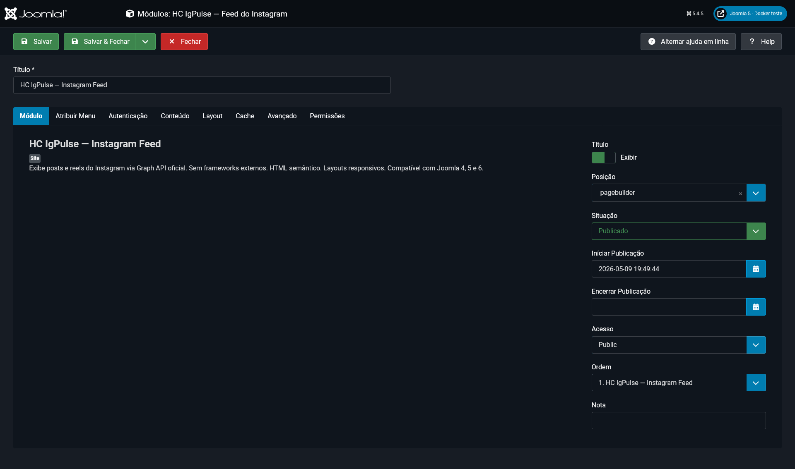
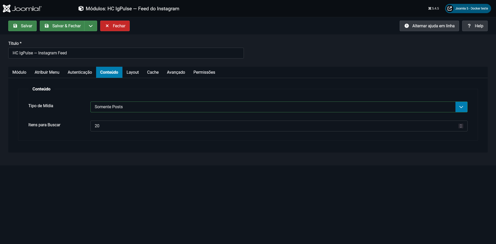
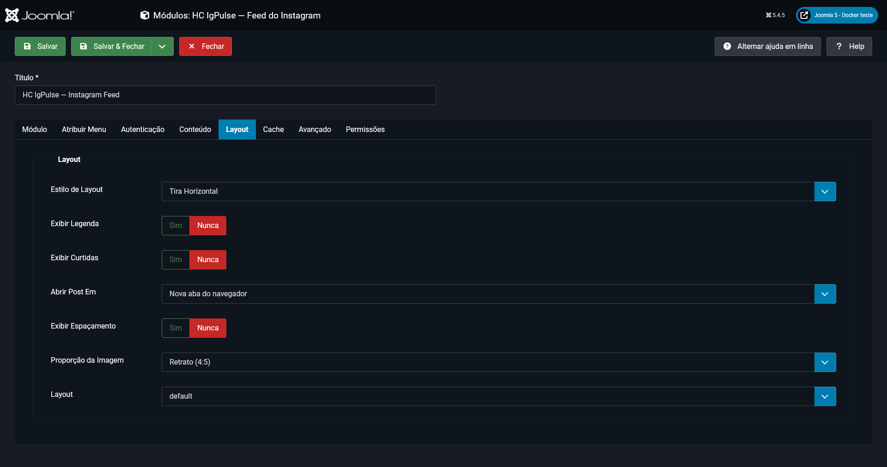
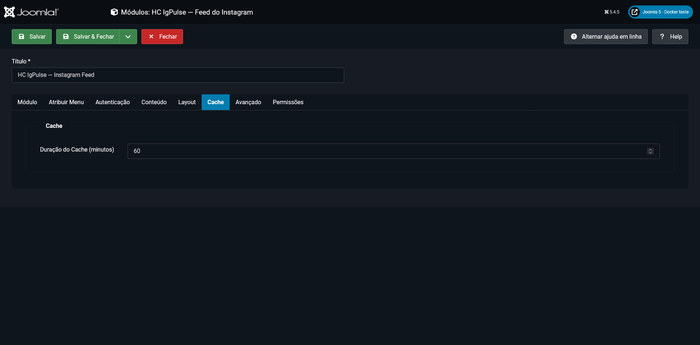
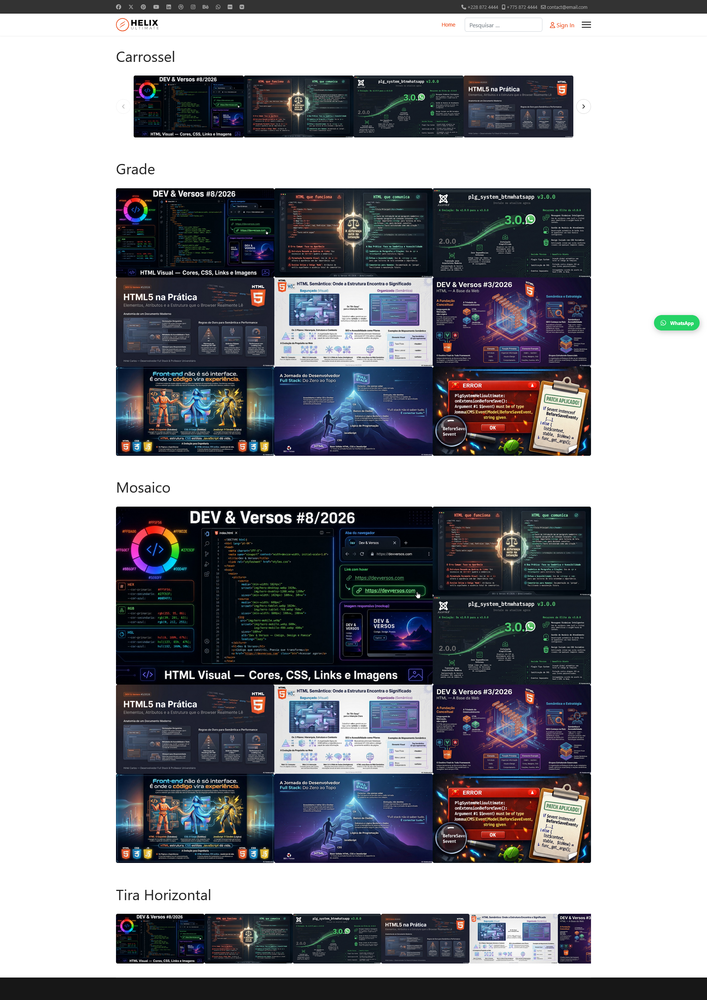

Problema
Integrar sem fragilizar o frontend
O módulo evita depender de widgets visuais externos e mantém a apresentação sob controle do próprio site Joomla.
Módulo Joomla · Open Source · JED
Instagram Feed para Joomla 4, 5 e 6
Visão geral
O HC IgPulse é um módulo de site para projetos que precisam apresentar conteúdo do Instagram sem incorporar bibliotecas visuais de terceiros. A extensão consulta a API oficial, normaliza os dados recebidos e renderiza o feed com HTML semântico, CSS próprio e JavaScript apenas quando o layout exige interação.
Seções da página
Problema e uso
Problema
O módulo evita depender de widgets visuais externos e mantém a apresentação sob controle do próprio site Joomla.
Público
Voltado a contas Instagram Business ou Creator vinculadas ao ecossistema Meta e com acesso à permissão exigida pela API.
Casos de uso
Útil em páginas iniciais, áreas institucionais, portfólios, vitrines editoriais e seções que precisam reaproveitar posts e reels.
Recursos reais
API
Consulta posts e reels por token e ID de usuário fornecidos na configuração do módulo.
Layouts
Carrossel, grade, mosaico e tira horizontal para diferentes espaços editoriais.
Responsividade
Quantidade de itens e comportamento visual adaptáveis ao tamanho da tela.
Mídia
Configuração de aspect ratio, espaçamento e quantidade de itens carregados.
Interação
O clique pode abrir lightbox, nova aba ou o conteúdo correspondente no Instagram.
Performance
Tempo de cache configurável para reduzir chamadas repetidas à API.
Acessibilidade
HTML semântico, atributos ARIA e navegação por teclado nos elementos interativos.
Dependências
A apresentação não depende de Bootstrap, jQuery ou biblioteca visual de terceiros.
Idiomas
Arquivos de idioma para a interface administrativa da extensão.
Capturas reais
As imagens abaixo vieram da documentação local do produto. A captura de autenticação foi excluída desta página porque contém credenciais e identificadores de teste.





Arquitetura
Base técnica
Camadas
Instalação
Use o ZIP da release oficial 1.0.0.
No Joomla, acesse Sistema, Instalar e Extensões.
Abra o HC IgPulse em Conteúdo e Módulos do Site.
Informe autenticação, escolha layout, posição e atribuição de menu.
A obtenção do token e do ID de usuário depende de uma conta profissional vinculada a uma Página do Facebook e de um aplicativo configurado no Meta for Developers.
Releases
Fonte: release e pacote instalável publicados no GitHub.
Artigo relacionado
Status editorial
Quando o artigo do HC IgPulse for publicado no LinkedIn ou na newsletter Dev & Versos, este bloco receberá a capa, o resumo e o link oficial.
Ver artigos publicadosConsulte o código, a página no diretório oficial, a release e o HUB de produtos Joomla.